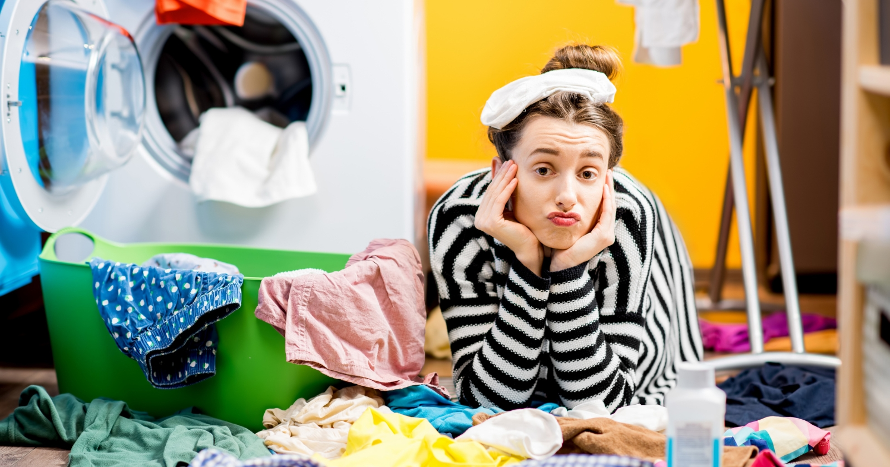
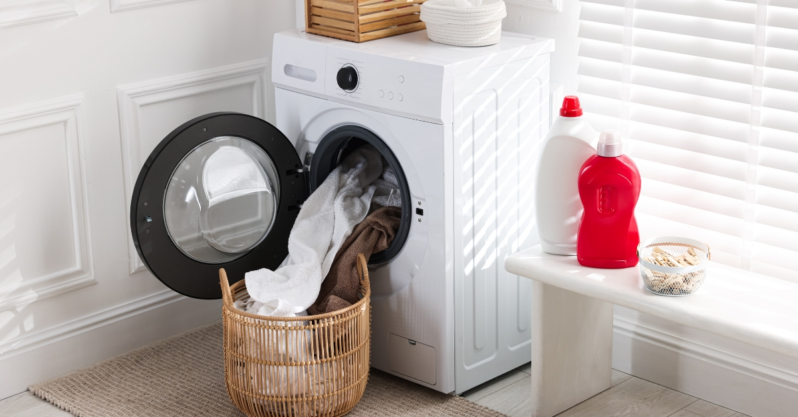
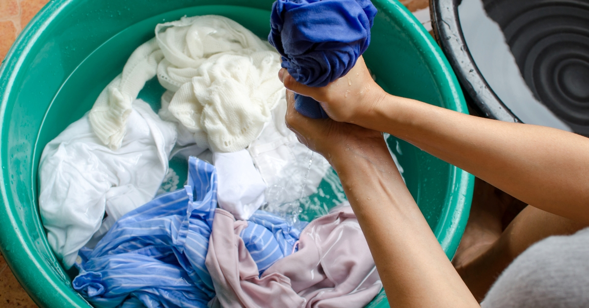

Sokan gondolják úgy, hogy amit a boltban akasztanak le a vállfáról, vagy amit érintetlen csomagolásban kapnak meg, az makulátlanul tiszta. Elvégre előttünk nem hordta senki, igaz? De vajon tényleg így van? Mi a helyzet a turkálók jellegzetes illatával, és mennyire kell óvatosnak lennünk a használt darabokkal? Ebben a cikkben körbejárjuk a mosás körüli legfontosabb kérdéseket, a vegyi kezelésektől kezdve a higiéniai kockázatokig.
Kezdjük a legnagyobb tévhittel: a használt ruhák koszosak, a bolti pedig tiszta. Ez az elmélet több ponton is sántít. Gondoljunk csak bele, hányan próbálhatták fel előttünk azt a nadrágot vagy pólót az üzletben? Ha pedig online rendeljük, nem feltétlenül a mások után maradt baktérium a fő ellenség.
A textilgyártás során rengeteg vegyi anyagot használnak a színezéshez és a tartás megőrzéséhez, amelyek komoly bőrirritációt vagy allergiát válthatnak ki. Ezen felül a hosszú szállítási idő alatt gombaölő szerekkel kezelik az árut, hogy megakadályozzák a penészedést a konténerekben. Kutatások bizonyították, hogy az új ruhákon hámsejtek, légzőszervi váladékok, sőt székletbaktériumok is előfordulhatnak. A legveszélyesebb zónát a fehérneműk és fürdőruhák jelentik, de a tetvek vagy rühatkák jelenléte sem kizárható. A válasz tehát egyértelmű: az új ruhát hordás előtt minden esetben ki kell mosni!

A használt ruha üzletekben érezhető jellegzetes illat sokakat elriaszt, pedig ez valójában a biztonság jele. Ez a szag a kártevők elleni fertőtlenítő kezelés eredménye, amit a nagykereskedelmi bálázás során alkalmaznak. Bár ez védi a ruhát, a bőrünknek nem tesz jót, így a mosás itt is kötelező.
Ha webáruházból rendelsz használt ruhát, bár sok vállalkozás tisztítva küldi a termékeket, a biztonság kedvéért egy otthoni kör sosem árt. Ha pedig magánszemélytől, "háztól" vásárolsz, a kockázat talán kisebb, hiszen ezek a darabok általában tiszta szekrényekből kerülnek elő, de a higiénia jegyében ezeket is érdemes átöblíteni.
Az új daraboknál érdemes egy rövid áztatással kezdeni, hogy lássuk, mennyire ereszti a színét az anyag. Ilyenkor a festékanyag még koncentrált, így megelőzhetjük a többi ruha összefogását. A spórolás jegyében egy 30-40 fokos rövid program is elég lehet, de ne feledjük: a legtöbb kórokozó csak magasabb hőfokon pusztul el. A fehérneműknél ezért javasolt a legalább 60 fokos mosás.
A használt ruhákkal gyakran könnyebb a dolgunk, hiszen azokat már sokszor kimosták előttünk, így kevésbé mennek össze vagy engedik a színüket. Mindig kövessük a bevarrt címke utasításait! Ha a címke hiányzik, hagyatkozzunk a tapasztalatunkra, és kezeljük úgy, mint a hasonló anyagú saját ruháinkat. A gyapjú esetében legyünk óvatosak: itt a kézi mosás vagy a gép speciális gyapjúprogramja a nyerő.

Sokan megúszósra veszik a figurát a kabátoknál, pedig mind az új, mind a használt darabokat ki kell tisztítani. A használt kabátoknál ez különösen kritikus, mert az emberek ritkábban mossák őket, mint a felsőket.
Poliészter: Alacsony hőfok, kímélő mosószer.
Toll- és gyapjúkabát: 30 fokon, speciális tisztítószerrel és kímélő programmal.
Vízlepergető dzseki: Kézzel vagy langyos vízben a legkönnyebb tisztítani.
Szövetkabát: Ha bizonytalan vagy, a tisztító a legbiztosabb megoldás, bár az új szövetkabátok kevesebb vegyszeres kezelést kapnak, így itt egy kicsit engedékenyebbek lehetünk. Fontos szabály: kabátot soha ne tegyünk szárítógépbe!
A gyerekek bőre sokkal vékonyabb és érzékenyebb a felnőttekénél, ezért náluk a mosás kérdése nem kényelmi szempont. Legyen szó egy boltban vásárolt, gyári vegyszerekkel (festékfixálókkal, gombaölőkkel) kezelt új darabról, vagy egy használt ruháról, amit a bálázás során erős fertőtlenítő szerekkel óvtak a kártevőktől, a kockázat ugyanaz: az irritáció és az allergia.
A fenntartható ruhatár titka tehát nem abban rejlik, hogy elhisszük, valami „tisztább” a másiknál, hanem a tudatos fertőtlenítésben. Egy alapos otthoni mosás után a másodkézből származó kincsek is teljesen biztonságos, bőrbarát és környezettudatos viseletté válnak, amikben bátran és nyugodtan járhatnak a legkisebbek is.
Olvasd el ezt is: Új vagy használt? Fókuszban a fenntartható gyerekdivat — itt részletesebben is írok arról, miért érdemes a secondhand mellett dönteni.